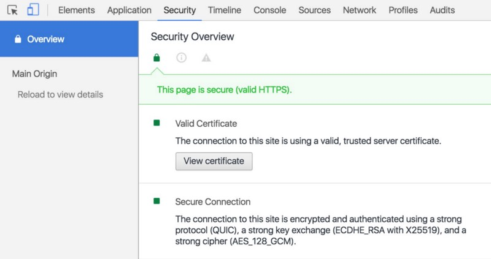
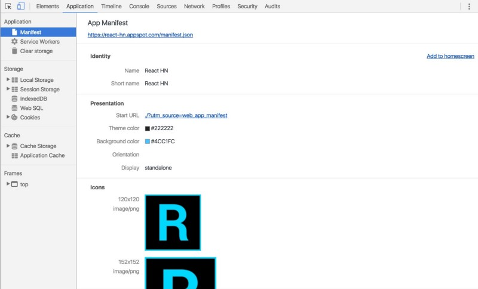

TOC Generator
TOC Generator is a computer program to make TOC curves. Users can generate TOC curves from different file formats and customize TOC curves for research.

How to Download and Run TOC Generator
Let’s begin with a PWA checklist. For this we’ll be using Lighthouse — a tool for auditing an app for PWA features and checking your app meets a respectable bar for web performance under emulated mobile conditions. Lighthouse is available as a Chrome extension (I use this version of it most often) and a CLI, both of which present a report that looks a little like this:
The top-level audits Lighthouse runs effectively a collection of modern web best practices refined for a mobile world:
- Network connection is secure
- User can be prompted to Add to Homescreen
- Installed web app will launch with custom splash screen
- App can load on offline/flaky connections
- Page load performance is fast
- Design is mobile-friendly
- Site is progressively enhanced
- Address bar matches brand colors
Btw, there’s a getting started guide for Lighthouse and it also works over remote debugging. Super cool.
Regardless of what libraries are in your stack, I want to emphasize that everything in the above list can be accomplished today with a little work. There are caveats however.
We know the mobile web is slow.
The web has evolved from a document-centric platform to a first-class application platform. At the same time the bulk of our computing has moved from powerful desktop machines with fast, reliable network connections to relatively underpowered mobile devices with connections that are often slow, flaky or both. This is especially true in parts of the world where the next billion users are coming online. To unlock a faster mobile web:
- We need to collectively shift to testing on real mobile devices under realistic network connections (e.g Regular 3G in DevTools). chrome://inspect and WebPageTest (video) are your friend. Lighthouse emulates a Nexus 5X with touch events, viewport emulation and a throttled network connection (150ms latency, 1.6Mbps throughput).
- If the JS libraries you’re using aren’t developed with mobile in mind, you may be running an uphill battle for perf when it comes to being interactive. We’re ideally aiming for being interactive in under 5 seconds on a representative device so more of that budget for our app code is ❤

That said, this is an area many libraries are working to improve on and may need to if they’re going to stay viable for performance on physical devices. Just take a look at the A+ job Preact is doing on perf with real-world devices.
Open-source React Progressive Web App samples

If you’re after relatively non-trivial examples of PWAs built with React and optimized with Lighthouse, you may be interested in: ReactHN — a HackerNews client with server-side rendering & offline support or iFixit — a hardware repair guide built with React but which uses Redux for state management.
Let’s now walk through what we need to do to check off each item in the Lighthouse report, continuing with React.js specific tips throughout the series.
Citation
If you make public a diagram that you worked out and/or checked with TOC Generator, you may cite the software as follows:
Zhen Liu (2020) "TOC Generator," software package, https://lazygis.github.io/projects/TOCGenerator.html
Network connection is secure
Tooling and tips for HTTPS

HTTPS prevents bad-actors from tampering with communications between your app and the browser your users are using and you might have read that Google is pushing to shame sites that are unencrypted. Powerful new web platform APIs, like Service Worker, require
HTTPS prevents bad-actors from tampering with communications between your app and the browser your users are using and you might have read that Google is pushing to shame sites that are unencrypted. Powerful new web platform APIs, like Service Worker, require secure origins via HTTPS but the good news is thanks to services like LetsEncrypt providing free SSL certificates and low-cost options like Cloudflare enabling end-to-end traffic encryption for all, it’s never been more straight-forward to get this setup.
For my personal projects, I usually deploy to Google App Engine which supports serving SSL traffic through an appspot.com domain if you add the ‘secure’ parameter to your app.yaml file. For my React apps that need Node.js support for Universal Rendering, I use Node on App Engine. Github Pages and Zeit.co also now support HTTPS.
The Chrome DevTools Security panel allows you to validate issues with security certificates and mixed content errors.
Some more tips to get your site more secure:
- Upgrade unsecure requests (“HTTP” connections) to “HTTPS” redirecting users as needed. Take a look at Content Security Policy and upgrade-insecure-requests.
- Update all links referencing “http://” to “https://”. If you rely on third-party scripts or content, talk to them about making their resources available over HTTPS too
- Use HTTP Strict Transport Security (HSTS) headers when serving pages. It’s a directive that forces browsers to only talk to your site in HTTPS.
I’d recommend watching Deploying HTTPS: The Green Lock and Beyond and Mythbusting HTTPS: Squashing security’s urban legends for more.
User can be prompted to Add to Homescreen
Next up is customizing the “add to homescreen” experience for your app (favicons, application name displayed, orientation and more). This is achieved by adding a Web Application Manifest. I usually find customizing cross-browser (and OS) favicons to involve the most work here, but tools like realfavicongenerator.net take a lot of the pain out of the experience.

There’s been much discussion on the “minimum” number of favicons a site needs to just work in most places. Lighthouse have proposed shipping a 192px icon for the homescreen icon and a 512px one for your splashscreen. I personally stick with the output from realfavicongenerator as despite it involving more metatags, I prefer the assurance my bases are all covered.
Some sites may prefer to ship a highly customized favicon per platform. I recommend checking out Designing a Progressive Web App icon for more guidance on this topic.

With a Web App manifest setup, you also get access to app installer banners, giving you a way to natively prompt for users to install your PWA if they find themselves engaging with it often. It’s also possible to defer the prompt until a time when a user has a useful interaction with your app. Flipkart found the best time to show the prompt was on their order confirmation page.
The Chrome DevTools Application Panel supports inspecting your Web App Manifest via Application > Manifest:
This parses out the favicons listed in your manifest and previews properties like the start URL and theme colors. Btw, there’s a Totally Tooling Tips episode on Web App Manifests if interested ;)
Installed web app will launch with custom splash screen
In older versions of Chrome for Android, tapping on a homescreen icon for an app would often take up to 200ms (or multiple seconds in slow sites) for the first frame of the document to be rendered to the screen.
During this time, the user would see a white screen, decreasing the perceived performance of your site. Chrome 47 and above support customising a splash screen (based on a background_color, name and icons from the Web App Manifest) used to color the screen until the browser is ready to paint something. This makes your webapp feel a lot closer to “native”.

Realfavicongenerator.net also now supports previewing and customising the Splashscreen for your manifest, a handy time saver.
Note: Firefox for Android and Opera for Android also support the Web Application Manifest, Splash screen and an add to homescreen experience. On iOS, Safari still supports customising add to homescreen icons and used to support a proprietary splashscreen implementation, however this appears to have broken in iOS9. I’ve filed a feature request for Webkit to support the Web App Manifest so.. fingers crossed I guess.